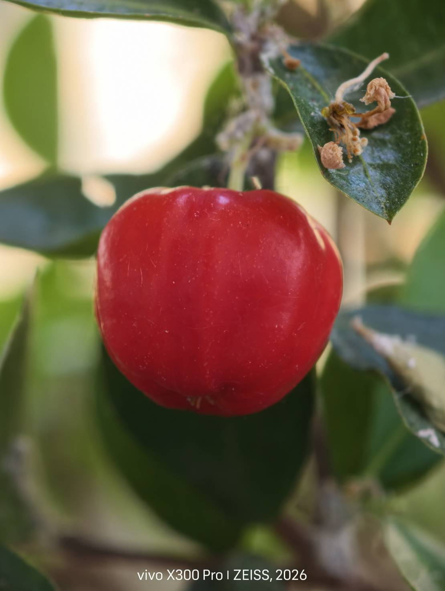
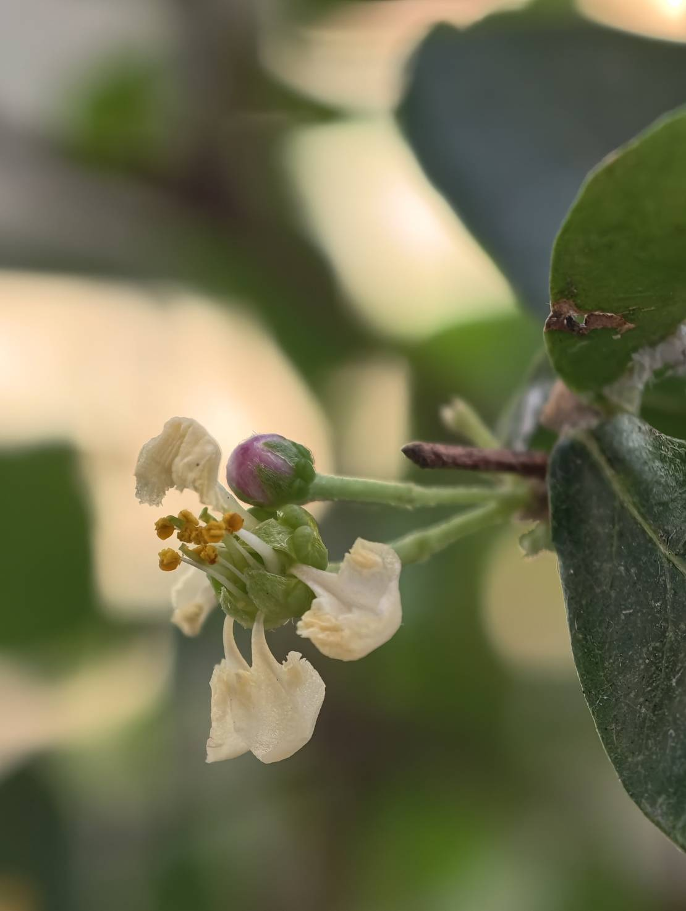
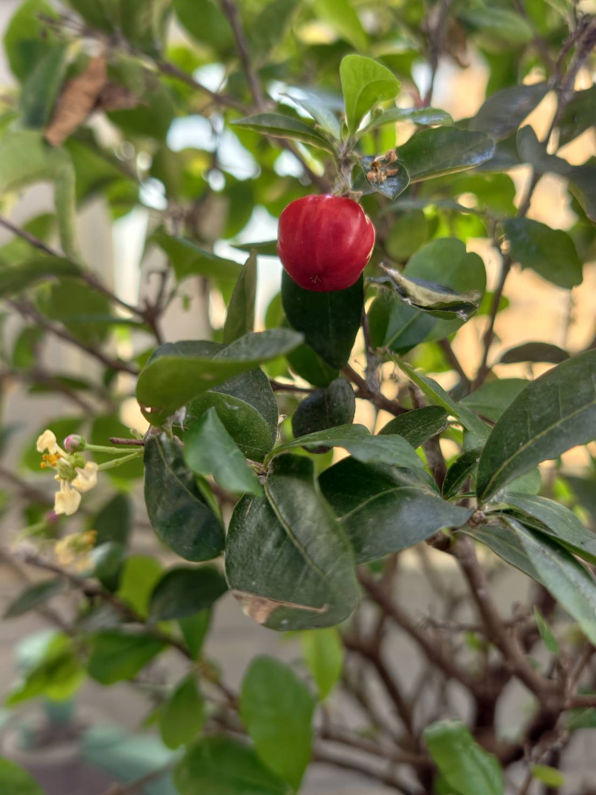
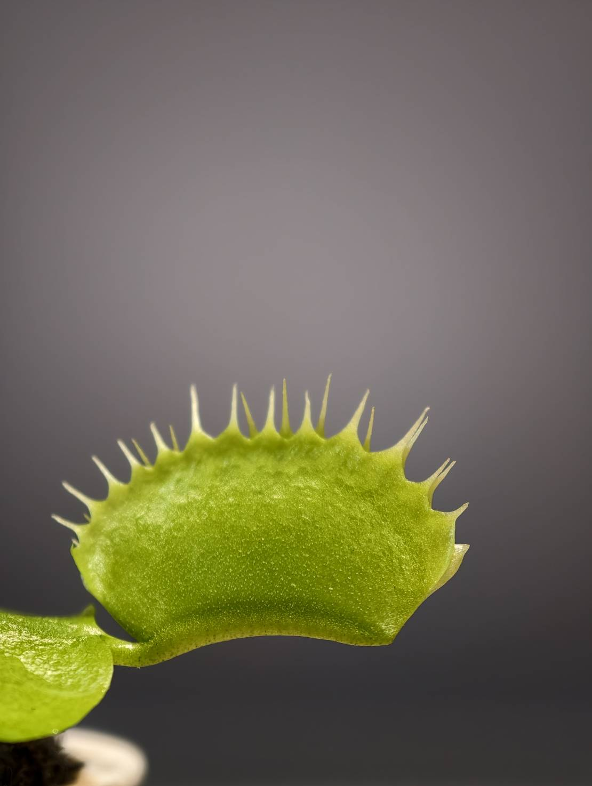
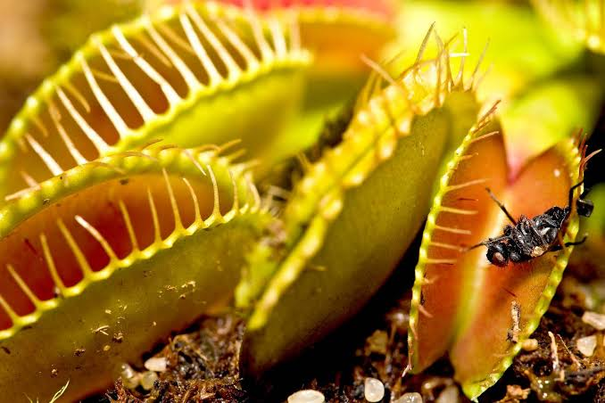
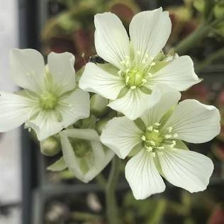
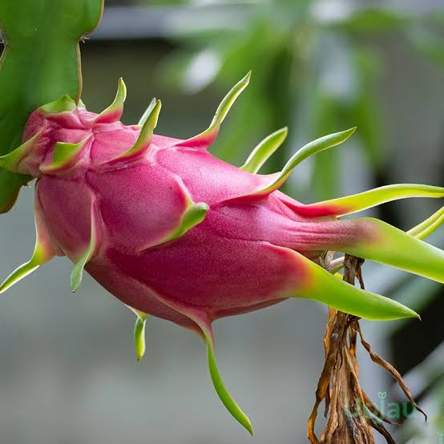
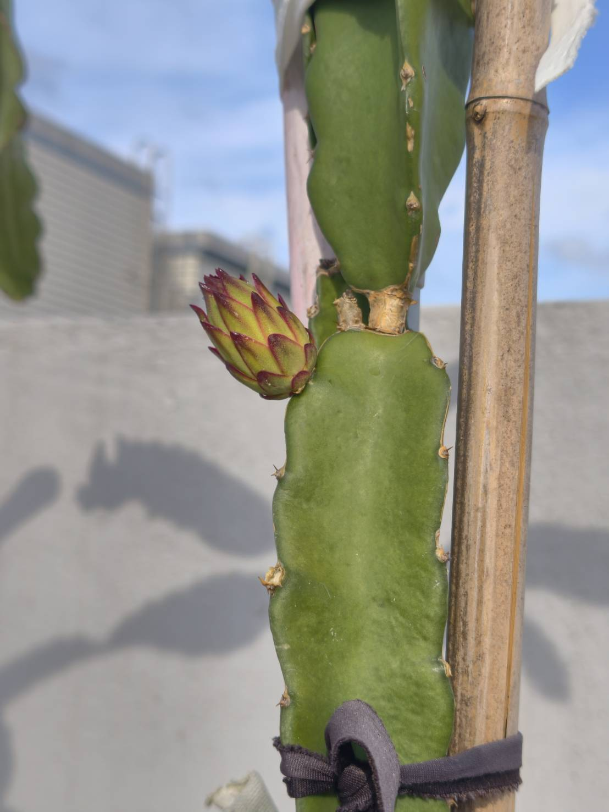
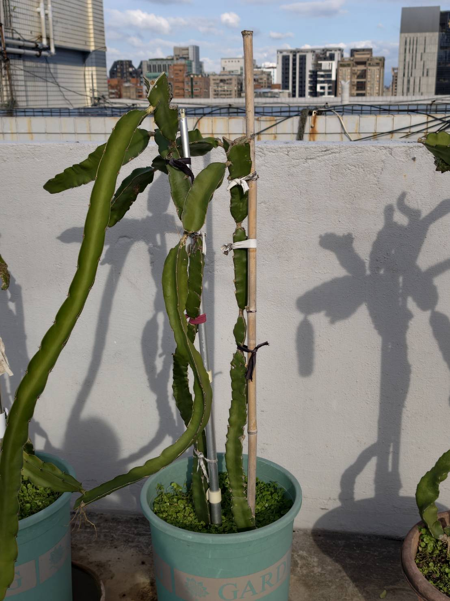

西印度櫻桃
Malpighia glabra / Malpighia emarginata



| 別名 | 黃槴櫻、巴貝多櫻桃 |
|---|---|
| 科屬 | 黃槴花科金虎尾屬 |
| 特徵 |
|
| 特色 | 維生素 C 含量極高，可生食或做果汁。 |
捕蠅草
Dionaea muscipula



| 別名 | 維納斯的捕蠅草、蠅鋏草 |
|---|---|
| 科屬 | 茅膏菜科捕蠅草屬 |
| 特徵 |
|
| 特色 | 原生於貧瘠沼澤，具備快速感應捕食運動。 |
火龍果
Selenicereus undatus



| 別名 | 紅龍果、量天尺、仙蜜果 |
|---|---|
| 科屬 | 仙人掌科量天尺屬 |
| 特徵 |
|
| 特色 | 喜全日照耐旱，富含水溶性膳食纖維與甜菜紅素。 |